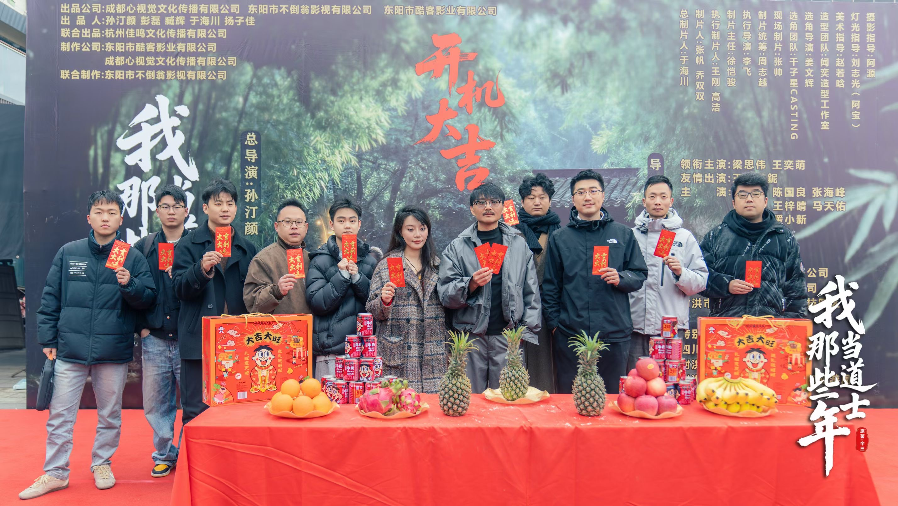
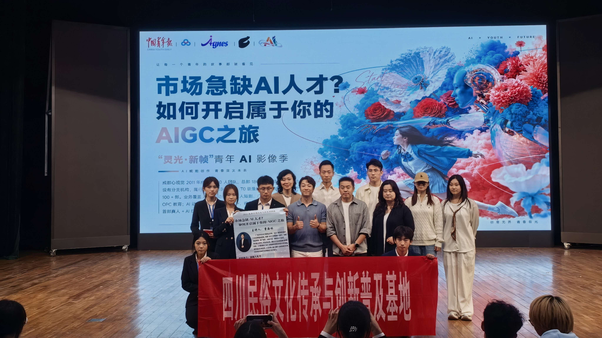
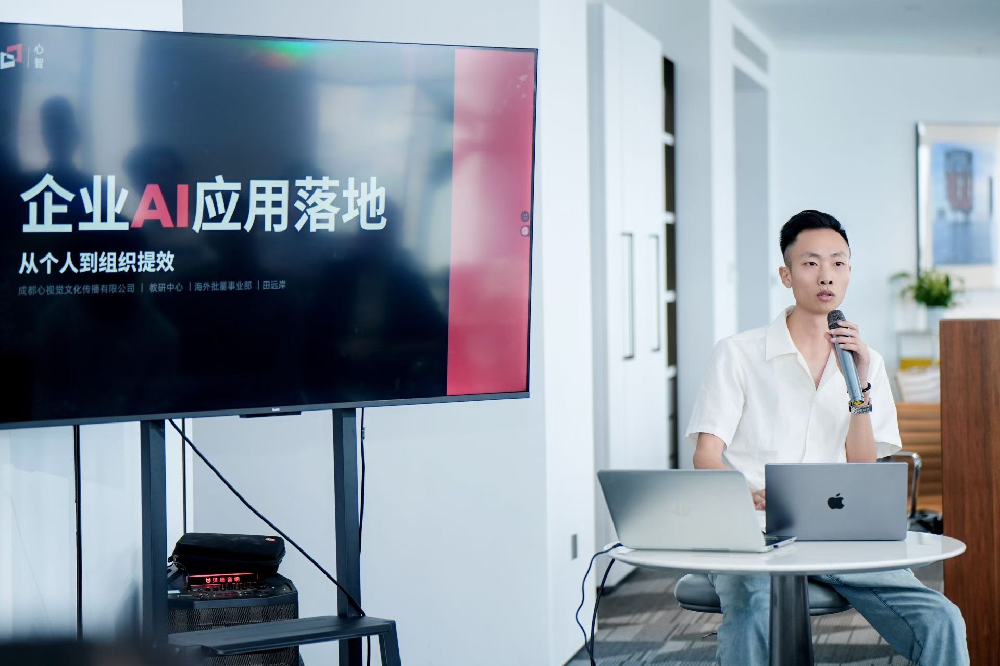
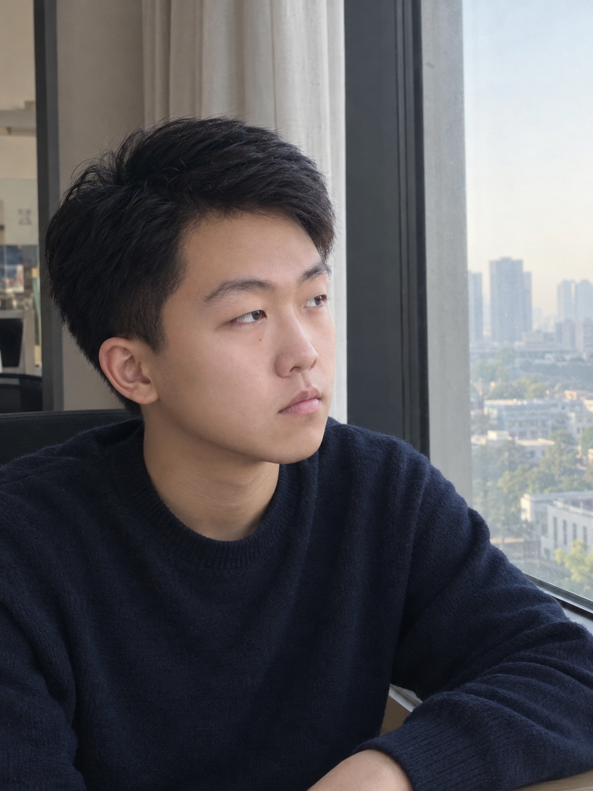

自有剧本库
海外本土剧本库沉淀在自有系统中，覆盖 BL、GL、狼人、吸血鬼、复仇、女性成长等题材，可随市场风向快速组织生产。
OVERSEAS AI DRAMA · ANGEL ROUND · 2026.10
建议使用电脑打开查看
新梦是一家以海外本土剧本库和自研 AI 生产系统为核心，持续验证、批量生产、发行和运营全球短剧的内容科技团队。
00 / 我们怎么走到今天
国内项目是更早期的 AI 技术与短剧制作验证；海外项目则在此基础上继续迭代技术，并进一步验证批量生产、发行与数据复盘能力。
下方数字来自历史项目战报；海外有效播放仍以心术口径单独统计，两类数据不合并计算。01 / 核心优势
海外本土剧本库沉淀在自有系统中，覆盖 BL、GL、狼人、吸血鬼、复仇、女性成长等题材，可随市场风向快速组织生产。
核心导演、制作、剪辑与研发人员来自已经完成海外项目的原班团队，协作流程经过实际项目磨合，启动后可直接进入稳定生产。
新梦 Studio、剧本库与心术覆盖内容供给、AI 制作、成本核验和运营复盘，把个人经验沉淀为团队可复用的流程。
团队已经打通制作、评级、发行与数据复盘链路；播放快照、项目成本和人员参与均可在心术中核验，后续扩张由真实 ROI 决定。
核心团队源自心视觉漫剧业务体系，积累了研发、培训、国内解说漫与海外批量剧的实战经验，并通过书面合作延续发行与产业资源协同。
02 / 已验证成果
已上线项目数据来自心术完整快照，最新读取于 2026 年 10 月 23 日，TikTok 后台数据截至 10 月 20 日。
仅统计成本表可匹配、已有平台快照的 B/C 项目；不含其他部门作品
VERIFIABLE DATA SYSTEM
第一张展示采集期大盘与近 30 天人员榜；第二张展示单剧累计快照及 10 月 17 日至 19 日的区间增量。截图留存于 10 月 22 日；本页指标已同步至 10 月 20 日完整快照。
系统为内部运营平台，请联系创始人获取临时账号。
SELECTED WORKS
以下均为累计有效播放，不代表已结算收入。
READY TO RELEASE
心术中的等待评级项目已经完成评级，结果均为 B 级。
03 / 内容与系统
海外本土剧本库，多来源内容供给
两人小组协作，约四天完成一部
首阶段只排入已定为 B/C 的项目
播放、成本、人员和榜单统一管理
LIVE PRODUCT SURFACES
以下均为当前线上产品真实界面。图片可放大查看，产品名称可直接访问对应系统。
THE MOAT
系统目前是内部生产力工具，网页不将其包装成已经产生收入的 SaaS 业务。
BL、GL、狼人、吸血鬼、复仇、女性成长等题材，内容来自原创、合作及其他合规来源。
沉淀 AI 制作流程、工具和协作标准，降低个人经验对交付稳定性的影响。
独立部署的趋势、项目、成本、人员和榜单运营系统，由王峻博独立开发。
04 / 商业模型
以下为播放规则下的预估结算情景，不是已到账收入或利润。
适用前提：首阶段仅排入已定为 B/C 的项目；未扣税费、退款或其他可能扣减，最终以平台账单为准。
DISTRIBUTION
依托心视觉全链路资源发行。平台结算后，先扣发行服务费，再在剩余部分中分配公司和制作团队。
AFTER MONTH 3
发行渠道改为自营，外部发行服务费不再扣除。制作团队仍按可分配收入的 40% 分成，平台结算后由公司与制作团队按 60% / 40% 分配。
05 / 现金周期
12 部/月
观察两周表现
等待首批账单
收到 M1 项目结算
按真实 ROI 扩张
进入扩张
维持 12 部/月
暂停扩张并调整
06 / 团队
FOUNDER
AIGC 认证讲师、ComfyUI 工程师、AI 全栈工程师；5 年运营与项目管理、3 年 AI 行业经验。曾带领三支团队完成心智 Claw、心智 Studio、心术与剧本库等体系的 0—1 建设。
前身份 · 心视觉团队介绍 PDF


FOUNDER MILESTONES
持续进入真实业务场景，把技术、培训、内容生产与组织管理连成一条线。
系统学习 AI、机器学习与深度学习，成为阿里妙鸭相机 AI 超创签约创作者。
进入 AI 教育赛道，开展社会学员培训与企业内训，累计培训学员 2,000+。
成为心视觉联合创始人、研发中心主任，完成心智 1.0；兼任解说漫事业部负责人，单剧最高播放突破 2,000 万。
推动解说漫进入高校培训并落地校企合作；8 月负责海外 TikTok 批量剧，推进心智 3.0、剧本库与心术建设，1 周跑通链路，首月累计播放破千万。
带领原班人马启动新梦，与心视觉达成长期深度合作，进入独立经营与真实结算验证阶段。
CORE TEAM

人员数据为参与项目组合表现；同一项目可能多人参与，不能相加，也不代表个人独立贡献。
07 / 融资方案
本轮最高 ¥20 万
单一投资人最高 ¥10 万
融资 10 万后缓冲 ¥13,800
OPTION A
无固定回报承诺，收益取决于公司经营、股权增值或依法分配收益。
OPTION B
单剧独立核算，不自动取得股权，不承诺保本，以项目真实结算为准。
USE OF FUNDS
NEW DREAM · NEXT
本月底完成场地与设备配置，进入稳定生产；第四个月开始，以项目真实 ROI 与未来三个月现金流压力决定保持、扩产或调整。
CONTACT
如需沟通投资、单剧合作或申请心术临时账号，可直接联系田老师。